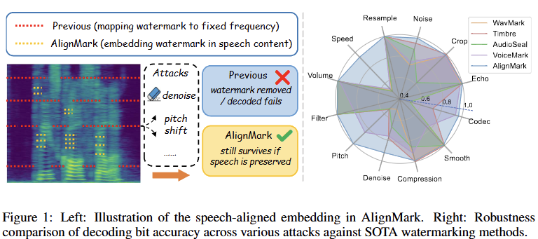

AlignMark: Speech-Aligned Audio Watermarking Resilient to Neural Transformations and Signal Distortions
anonymous authors
TL;DR (Summary)
Abstract
The rapid advancement of AI generation technologies has raised critical concerns about AI deepfakes and intellectual property
infringement. Audio watermarking techniques offer a promising solution to this risk, but existing methods embed watermarks as
static artifacts in fixed frequency bands, making them vulnerable to neural transformations and signal distortions. To overcome
these limitations, we propose AlignMark, a novel speech-aligned audio watermarking method that dynamically embeds watermarks into
speech content. AlignMark comprises a speech-like watermark generator, a speech-aligned embedder leveraging temporal and spectral
masking, and a feature-pyramid watermark decoder for multi-scale extraction. By aligning watermarks directly with speech content,
AlignMark ensures robustness against attacks that disrupt traditional frequency-based embedding. Extensive experiments on three
datasets and 21 attack scenarios demonstrate that AlignMark achieves state-of-the-art performance, with an average ACC above 0.98,
a FAR of 0.05, and imperceptible impact on audio quality, significantly outperforming existing methods in challenging scenarios
such as pitch shifting and neural transformations.
Method Overview

The architecture of AlignMark, shown in Figure 2, includes three components: a speech-like watermark generator,
a speech-aligned watermark embedder, and a watermark decoder. The generatoruses pre-trained speech codec models
to convert watermarks into speech-like audio for natural embedding. The embedder integrates this audio into the
original audio using STFT-based complex spectrograms. The decoder extracts watermarks by combining temporal masking
for speech frame localization with a multi-scale feature pyramid for robust extraction. We jointly train the entire
model to align watermarks with speech, preserving audio quality and enhancing robustness.
Watermarking Examples
| Source Audio | Watermarked Audio |
|---|---|